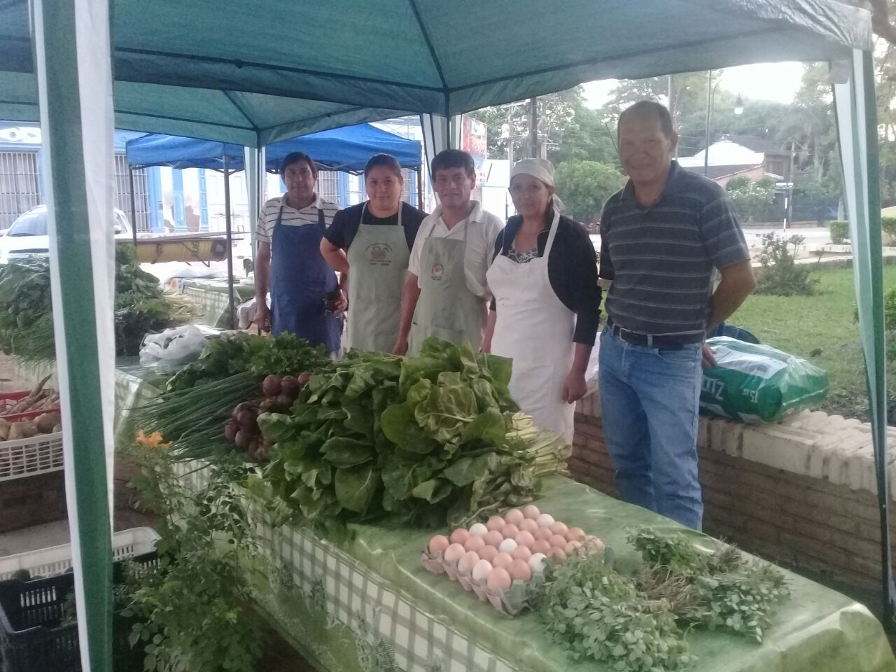

La Feria Franca
La feria Franca esta constituida por productores de la Agricultura Familiar que comercializan en forma directa los productos cultivados y elaborados por ellos mismos en forma directa al consumidor, garantizando de esta forma la calidad de sus mercaderias y cuyo objeto es la autosustentacion familiar de los productores como el menor costo de sus productos ofrecidos a los consumidores
